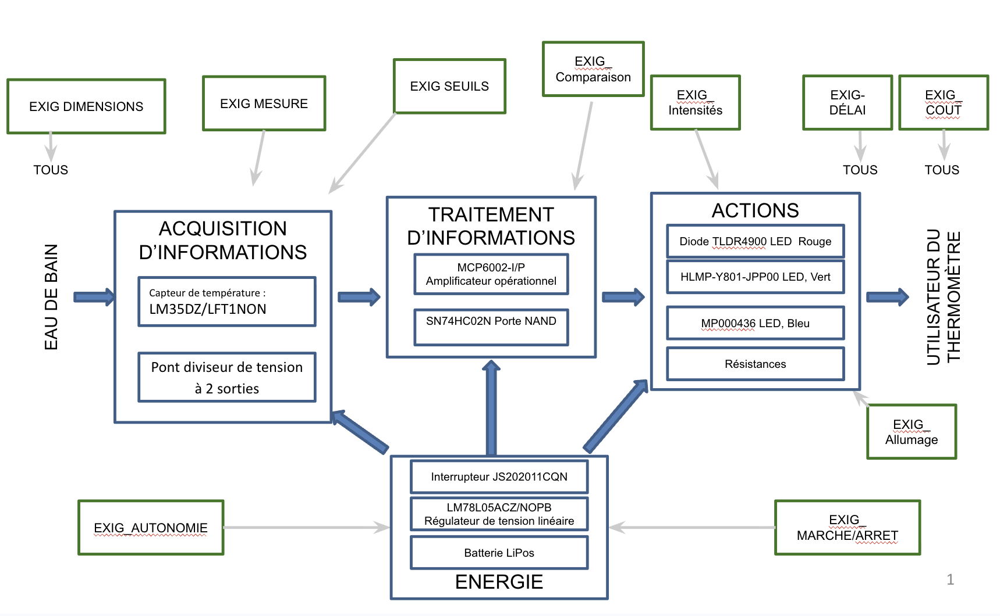
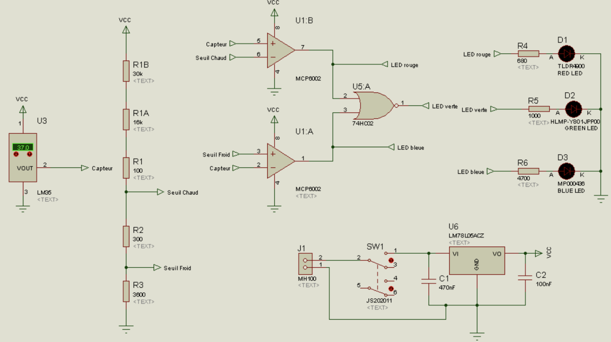
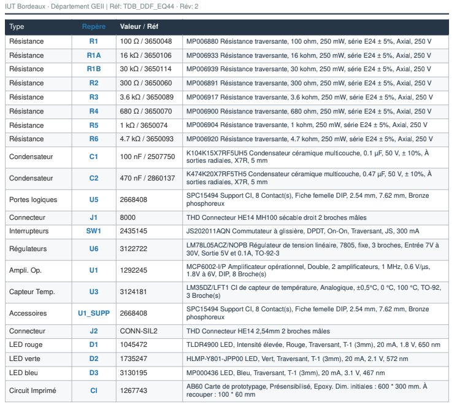
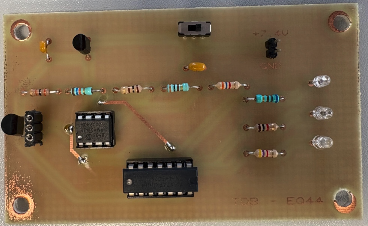
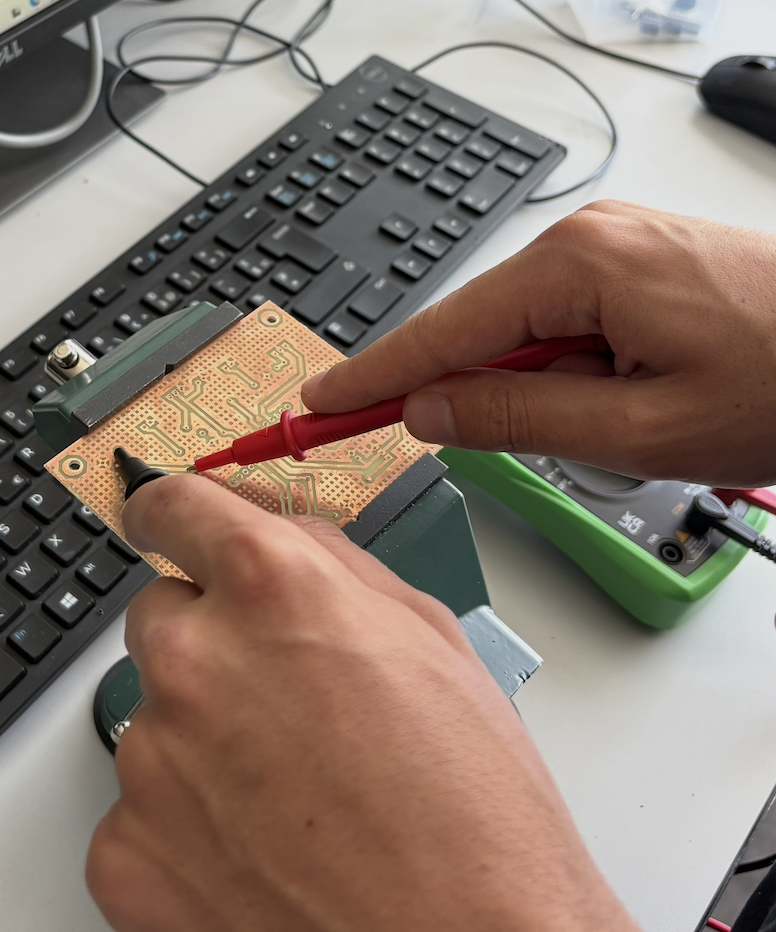
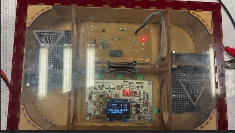

Développé au sein d'une équipe de 4 étudiants, ce projet a débuté par l'analyse fonctionnelle des contraintes imposées par le cahier des charges client. Notre but était de concevoir l'architecture matérielle d'un système autonome de surveillance de température pour bébé.
Nous avons modélisé cette étude préliminaire sous la forme d'un schéma fonctionnel global, reliant chaque exigence (mesure, autonomie, coût) aux blocs physiques d'acquisition, de traitement d'informations, d'actions et de gestion de l'énergie.

La phase de conception détaillée nous a conduits à définir la logique séquentielle complète de l'appareil au sein du Dossier de Définition de Conception (DDC). Sans utiliser de microcontrôleur programmable, nous avons structuré les blocs d'interconnexion pour automatiser le comportement de la LED RVB selon les seuils thermiques réels :
Cette structure garantit un retour d'information instantané pour veiller à la sécurité du bébé pendant le bain.
Dans le cadre du Dossier de Fabrication (DDF), nous avons saisi le schéma de structure électronique sous le logiciel ISIS. Le circuit s'organise autour d'un capteur de température analogique linéaire LM35DZ qui délivre une tension proportionnelle aux degrés Celsius.
Ce signal est envoyé vers un amplificateur opérationnel double MCP6002 configuré en comparateur de tension matériel. Des portes logiques combinatoires (porte NAND SN74HC02N) traitent ensuite l'information pour aiguiller les commandes vers chaque branche de LED.

Nous avons rédigé la nomenclature exhaustive (BOM) du produit afin de planifier l'approvisionnement des composants. Chaque pièce a fait l'objet d'un calcul de dimensionnement strict pour valider le respect du coût, de l'autonomie et de l'encombrement requis :

La fabrication physique de la carte a suivi le protocole complet de laboratoire en 9 grandes étapes industrielles : de l'impression des typons à l'échelle 1:1, l'insolation sous vide, la gravure chimique Bungard par oxydoréduction, jusqu'au perçage minutieux sur perceuse à colonne.
Nous avons ensuite procédé au brasage à l'étain des composants traversants (THD) sur le circuit imprimé fini. Le montage a respecté une logique de hauteur stricte (vias, résistances, supports de circuits intégrés, puis régulateur et connecteurs HE14) afin de garantir une implantation propre et stable.

Avant la mise sous tension initiale, des tests statiques indispensables ont été opérés au multimètre configuré en mode testeur d'impédance et de continuité. Nous avons validé la continuité électrique complète le long de chaque piste de cuivre et certifié l'isolation absolue (absence de micro-courts-circuits) entre les lignes parallèles.

Le projet s'est achevé par une campagne métrologique en conditions réelles au sein d'une enceinte thermique thermostatée afin de valider la conformité de notre carte par rapport aux exigences. Nous avons vérifié le basculement net des LED RVB aux seuils exacts de 36°C et 39°C, garantissant la sécurité finale de l'utilisateur.
